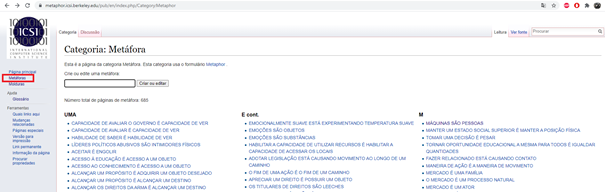
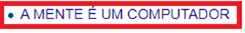
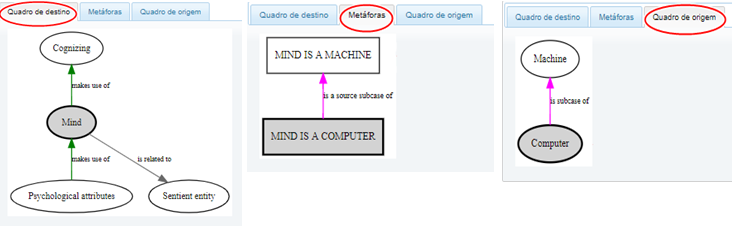
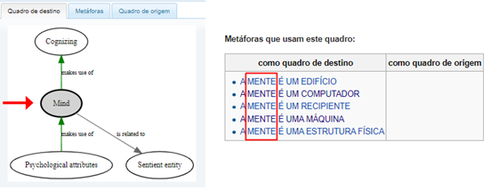

O que é a Metanet?
A MetaNet é um banco de dados lexical que busca identificar e analisar sistematicamente as metáforas usadas na comunicação humana em diversos contextos do cotidiano
e está disponível através do link: MetaNet Wiki.
Desenvolvida por diversos pesquisadores de Universidades americanas e financiada pela Intelligence Advanced Research Projects Activity (IARPA),
foi baseada na Teoria da Metáfora Conceptual, proposta por George Lakoff e Mark Johnson no livro “Metaphors We Live By”.
A ferramenta utiliza-se da ideia que nós, usuários da comunicação, nos expressamos através de conceitos reais para facilitar o entendimento de algo abstrato.
Na prática, os termos essenciais de uma sentença são definidos como “Domínio Fonte” e “Domínio Alvo”, identificados por Frames que correlacionam outros termos de aplicação semelhante e possibilitam a conexão com outras metáforas.
Por exemplo: Na sentença “O mal é escuro”, “Mal” é o Domínio Alvo e “Escuro” o Domínio fonte. Além disso, “Mal” está conectado ao termo “Imoralidade”, por exemplo,
que poderia ser aplicado na mesma sentença sem alteração de sentido.
Utilização MetaNet passo a passo:
1 - Acesse o site MetaNet Wiki ;
1.1 - No menu apresentado do lado esquerdo da página, no item Metáforas é possível pesquisar categorias de metáforas onde se encontram separadas por ordem alfabética.

2 - Clicando em uma metáfora já presente no site como exemplo para analisarmos o conteúdo, ele nos mostra detalhadamente o nível, tipo, origem e alvo, cita uma metáfora relacionada, exemplos e gráficos.

2.1 - O Gráfico de metáforas relacionadas nos mostra três itens, sendo eles: Frames de destino, Metáforas e Frames de origem. A função desses gráficos é nos mostrar os frames que compõem a metáfora “A mente é um computador”.

2.2 - Além disso, ainda baseado no exemplo da metáfora “A mente é um computador”, ao clicar na palavra “Mente” (Mind), o site nos leva para uma página onde mostra os quadros relacionados à palavra, seu significado, categoria e todas as metáforas que contenham a palavra “Mente”.

Por todos esses aspectos, conclui-se que a MetaNet é uma poderosa fonte de pesquisa para linguistas cognitivistas que buscam o entendimento de uma expressão, aprofundando em seu significado e sentenças similares de aplicação universal.
Porém, a ferramenta não permite a inclusão de metáforas por parte do usuário para que esta seja analisada, o que restringe seu uso somente à consulta das frases já existentes no banco de dados. Utilizando-a da forma correta,
é possível analisar o comportamento humano perante comparações utilizadas no cotidiano e no meio acadêmico-científico. Além disso, é uma ótima ferramenta para enriquecer seu vocabulário, tornando sua habilidade de se expressar mais aguçada.